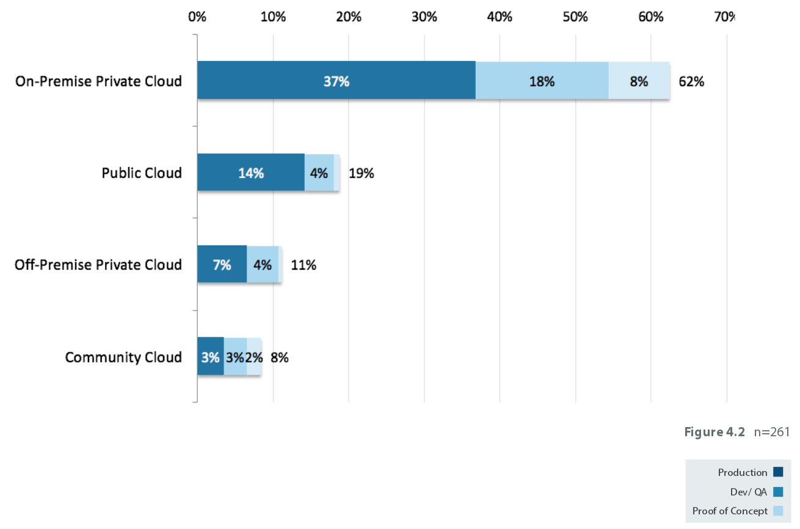

Opciones de instalación de OpenStack
Alberto Molina Coballes y José Domingo Muñoz Rodríguez

Theme by reveal.js
Por dónde empezar...
- Si hemos decidido la implantación de un cloud privado IaaS con OpenStack tenemos que ver cómo vamos a realizar la instalación y configuración del mismo.
- Tenemos la posibilidad de instalar un entorno de pruebas (no para su explotación) en un equipo para tener una primera experiencia del funcionamiento de OpenStack
- La administración y gestión de Openstack es un proceso complejo y su descripción detallada precisaría de un curso específico. Esto no es más que un pequeño esbozo
¿Privado o privado alojado?
Elegir una versión
- Elegir qué componentes son necesarios y descartar las versiones de OpenStack que no los incluyan
- Salvo necesidad no utilizar la última versión publicada ya que suelen aparecer bastantes "bugs" en los primeros meses
- Las opciones recomendadas en estos momentos serían Liberty o Mitaka
- No es igual elegir una versión para un entorno de pruebas que para un entorno en producción
Instalación manual
- Elegir una distribución GNU/Linux que incluya en sus repositorios los paquetes de OpenStack:
- Debian, Ubuntu, openSUSE, Red Hat, CentOS, Fedora
- Las más utilizadas son Ubuntu y CentOS
- Realiza una instalación manual siguiendo la documentación oficial
- Es recomendable hacer al menos una vez una instalación manual para familiarizarse con los componentes de OpenStack
Instalación automática
- Existen "recetas" elaboradas con las herramientas de automatización de la configuración más populares:
- Chef - Repositorio GitHub
- Puppet - Ejemplo: RDO
- Ansible:
- OpenStack Ansible
- Muy utilizado con libros de jugadas elaborados por los usuarios. Ejemplo: openstack-ansible
- Nuestro caso: https://github.com/iesgn/openstack-debian-ansible
- Desventaja: Se pierden los detalles de la instalación
Instalación usando distros específicas
- Existen varias distribuciones de OpenStack, libres o no, muchas de ellas te ofrecen herramientas específicas para realizar una implantación, por ejemplo:
OpenStack on OpenStack (TripleO)
- Principalmente pensado para grandes despliegues en centros de datos
- Muy relacionado con Ironic
- Utiliza templates de heat
- Undercloud/Overcloud
- Red Hat Enterprise Linux OpenStack Platform Director
Ubuntu autopilot
- Maas
- Juju
- Autopilot
Componentes a incluir
- Componentes "core"
- Componentes adicionales
- Navigator Project
Instalación de un entorno de pruebas
- Devstack: es un conjunto de script bash que nos permiten instalar OpenStack de forma automática.
- Es el entorno que usan los desarrolladores de OpenStack para tener una instalación limpia
- No sirve para entornos en producción
- Tutorial: Instalar Open Stack Juno con devstack